Lecture 8
Week 8: Pricing American and path-dependent options
- Path dependent options (exotic and simple conceptually)
- Vanilla puts and calls are tip of the iceberg
- Don't have closed formed solutions for many of these, need to use numerical methods
This week we use the binomial and Monte Carlo methods to price:
- American options (don’t have closed-form Black-Scholes prices).
- Some simple exotic path-dependent options (some actually do haveclosed-form solutions but we largely ignore them).
The binomial model and Monte Carlo method (and PDE approach) have strengths and weaknesses. One should always use the computational technique that is most tractable, practical, accurate, efficient and numerically stable for the pricing application at hand, and we’ll do this.
American options
An American option gives the holder the right (but not the obligation)
to exercise it at any point up to and including the expiry date
- This early exercise feature actually introduces quite a bit of mathematical complexity into the pricing of American options.
- We immediately run into the problem of not having a closed-form solution for the price of an American option.
Remark Recall that the price of American and European call options coincide on non-dividend-paying stocks.
- Can use the Black-Scholes model for these American calls.
American option, exercise any time up to
In these notes we’ll use the binomial model for pricing American options since it’s conceptually very simple and is also very accurate.
- Modifying the Monte Carlo approach for American options is conceptually and mathematically a bit of a stretch for FINM3405.
- The PDE approach is extensively used for American options but it’s mathematically a bit beyond FINM3405.
A very simple adjustment needs only be made to our previous binomial model approach of stepping backwards through the asset price tree in order to price American options, and it is motivated by some of the pricing bounds previously noted for American options:
- American options are worth at least as much as European options:
and
- American options are worth at least as much as their intrinsic value:
and
(lower pricing bounds) because they can be exercised immediately
- how we might consider modifying the binomial model?
The adjustment to price American options is:
A each node, set the American option price equal to the maximum of the “1-step European price” and the option’s intrinsic value:
-
Recall we discretise the interval
into equally-spaced dates with and spacing -
At date
there are asset prices for .
The (American and European) option payoffs at expiry are
and
- At point in time
in the tree, - Capital N in the above equation denoting you are in the final layer of the tree
- The “1-step European” option prices at node ij on the tree are
- call price at a given node in the tree
- one period binomial model risk neutral price
- present value of the risk free rate, multiplied by the probability of the up step multiplied the price price of the option in the up step, plus (1-p) of the down step in the asset tree
- The call and put option intrinsic values at node
are
and
Hence, the American option prices at node
- In an exam, could probably only ask you to do a one-step
Example
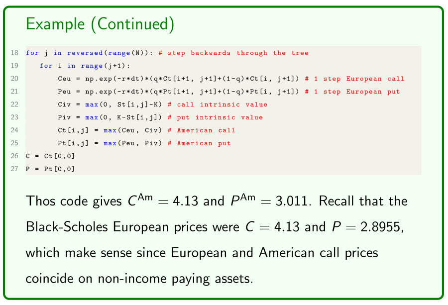
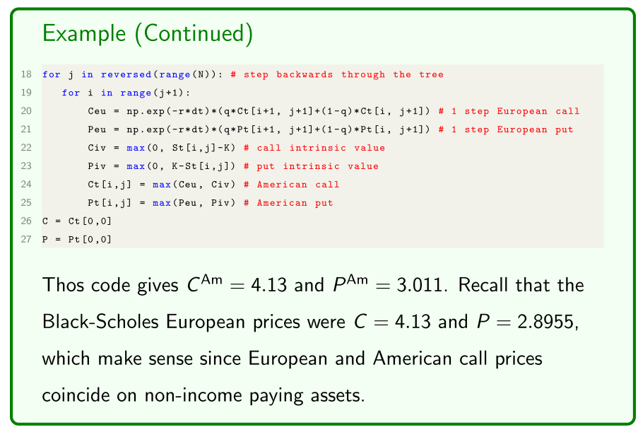
- American call option the same as European with no underlying dividend
Incorporating dividends
Let’s consider a continuous dividend yield
- The European binomial model with a dividend yield is the same as without one except we set the risk-neutral probability to
- We also require the technical condition
- The CRR scheme is unchanged with
and - But the Jarrow-Rudd scheme becomes
and
- More generally, how do you incorporate a continuously compounding dividend yield?
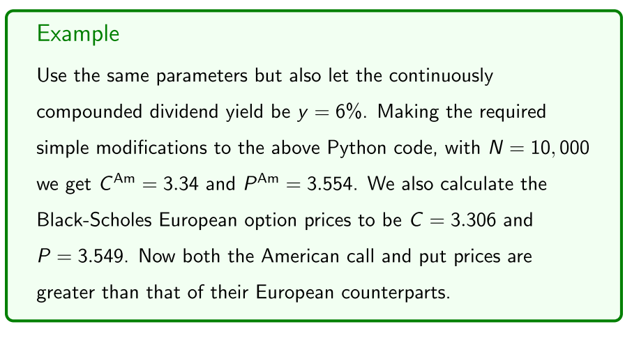
- Use the binomial model to adjust them
Path-dependent options
We now numerically price some European path-dependent options.
- A European option is path dependent if its payoff is calculated from the underlying asset’s path travelled over the option’s life.
We consider the following path-dependent options:
- Chooser options.
- Lookback options.
- Barrier options.
- Asian options.
The binomial model was well suited for pricing American options.
- The binomial model is well suited for chooser options.
- Monte Carlo is well suited to the other path-dependent options.
A European chooser option is similar to a plain vanilla European option except that it allows the holder to choose at some date t choose (the choice date) over the option’s life if the option is a call or a put!
- Of course the choice date satisfies
.
On the choice date, it is rational for the holder to choose the option to be whichever out of the call or put has the highest value on that date.
Basic exotic options - path dependent
don't know what the payoff is going to be
Dependent on intermediate values of the values of the asset
Get to expiry, don't know what it's going to be until we look back at it's path
not interested in closed-form solutions
numerical techniques to price options
want to show using numerical methods are really simple
Chooser options
A European chooser option is similar to a plain vanilla European option except that it allows the holder to choose at some date
- Some intermediate date before the expiry, they get to choose whether it is a call or a put
- Rationalisation, holding some sort of option, choose whether call or put and rational to choose which has the highest value
On the choice date, it is rational for the holder to choose the option to be whichever out of the call or put has the highest value on that date.
Hence, to adapt the binomial European option pricing Python code to handle the choice date we do the following:
When working backwards recursively through the binomial tree to calculate the European call and put option prices, on each node of the choice date select the chooser option’s value as the maximum of the call and put values. From there work backwards recursively as per normal for the chooser option, ignoring the call and put.
work backwards through the tree
- N - layer model in excel, calculate put and call values in the tree, when you get to the choice
- asset value might be quite high call options are more valuable
- When asset value is quite low, put options will be more valuable
Python code to price a chooser option using the same parameters:
Example
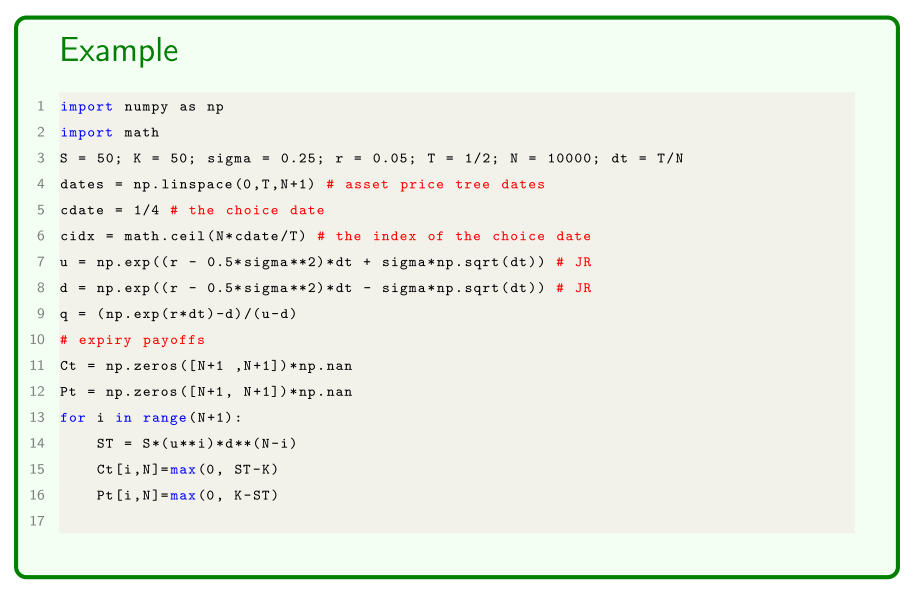
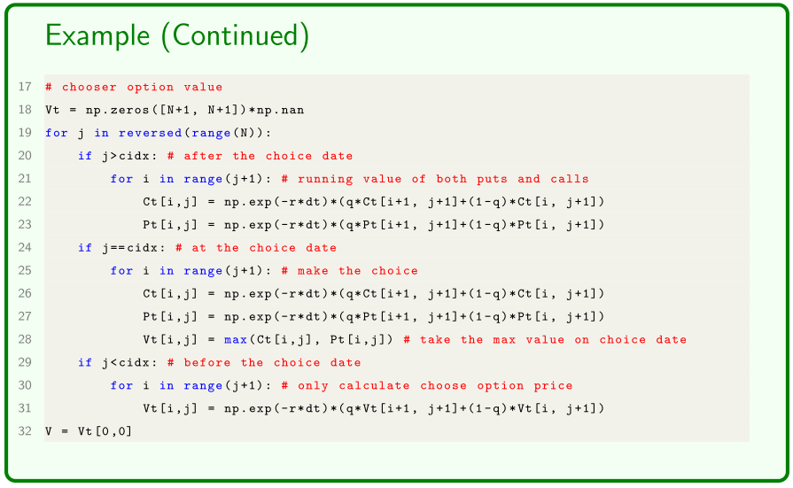
- choose the actual value of you option to be the greater of the call or the put option
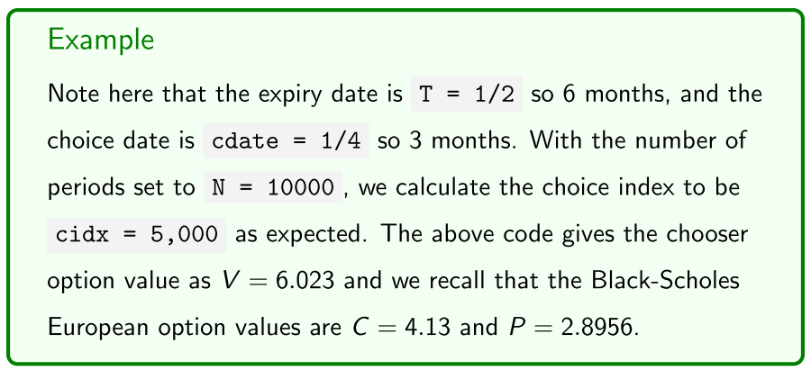
- Chooser option, both extreme prices will be quite a lot higher
- makes sense it would be quite a bit more than actual calls and puts
- Choice
Lookback options
A lookback option’s payoff at expiry depends on the maximum or minimum prices of the underlying asset over the life of the option. We distinguish between two types of lookback options:
- Fixed-strike lookback options.
- Floating-strike lookback options.
European fixed-strike lookback options are very similar to plain vanilla European options except the “final price” of the underlying asset used in calculating the payoff is not the asset price
- call payoff =
- put payoff =
- Easy to calculate in monte-carlo simulation paths
- calculate a whole bunch of asset paths
- calculate the value of the option as the average paths
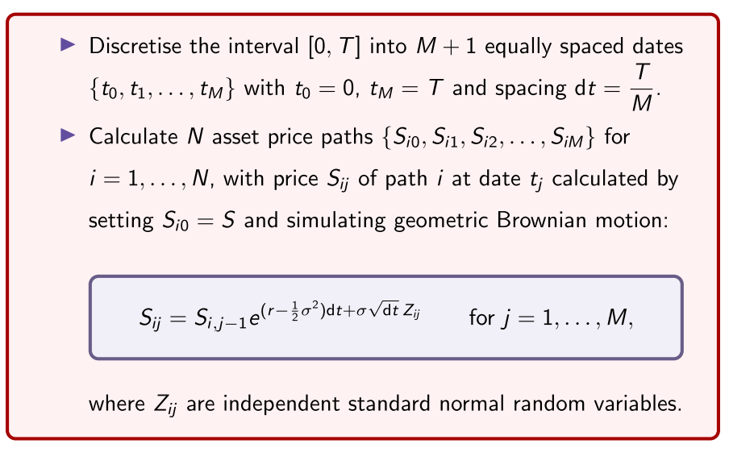
- using the value from the previous step
The maximum and minimum asset prices of path
The fixed-strike lookback option payoffs for path
- call payoff =
- put payoff =
The Monte Carlo option prices are then simply
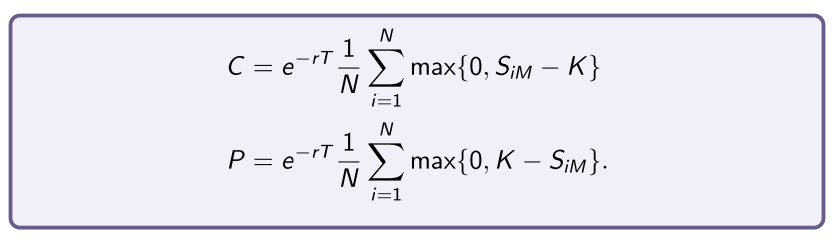
Example
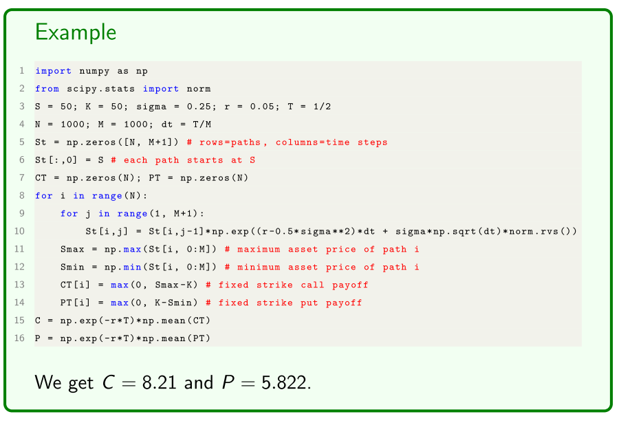
In an Exam
- calculate two or three paths in geometric brownian motion
- two or three paths, and two or three time steps just have to remember average of the payoffs
Floating-strike lookback options
European floating-strike lookback options differ from fixed-strike options by instead setting the strike price
- Uses the final asset value as per normal, the strike price is the maximum value (over the life of the option)
- don't know the contract price until expiry
So, after calculating the N asset price paths
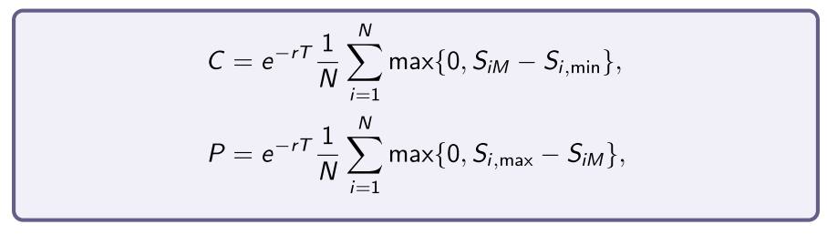
Example
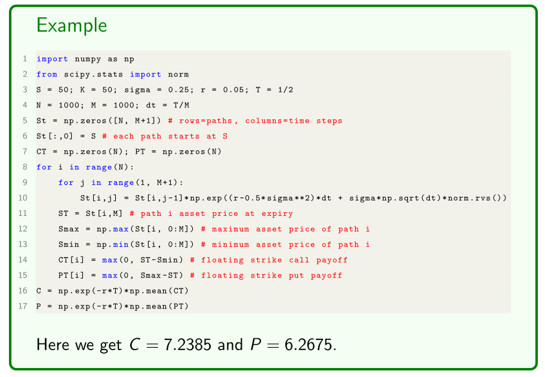
- Examined, two or three paths with two or three time steps
Barrier options
European barrier options are another interesting variation of the path-dependence theme. They are effectively plain vanilla European options whose payoff s “knock in” or “knock-out” if the price of the underlying asset hits a barrier
- Knock-in barrier options: The payoff “knocks in” if the barrier
is hit, meaning that the option starts its life deactivated and then is activated if is hit at some point. - Knock-out barrier options: The payoff “knocks out” if the barrier
is hit, meaning that the option starts its life as activated and then is deactivated if is hit at some point.
- once the underlying option hits a barrier it comes into light
- go into exotic options with each other
Knock-in barrier options
European knock-in options are activated if the price of the underlying asset hits the barrier B at some point of the option’s life.
- The payoffs are then the usual
for a call and for a put.
If the barrier is never hit, the option is never activated and expires worthless. There’s two kinds of knock-in options depending on the relation between
- Up-and-in options set
, noting that typically . - Down-and-in options set
, noting that typically .
The Monte Carlo pricing of knock-in options is a simple modification to the above, simply to check each path to see if the barrier was hit.
- Up-and-in - if the underlying asset price is high enough to hit the barrier
- Monte-carlo - did it hit, normal option payoff
- If the payoff never hit the barrier then it's payoff is 0.
Example
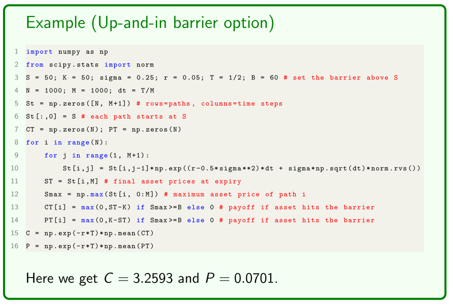
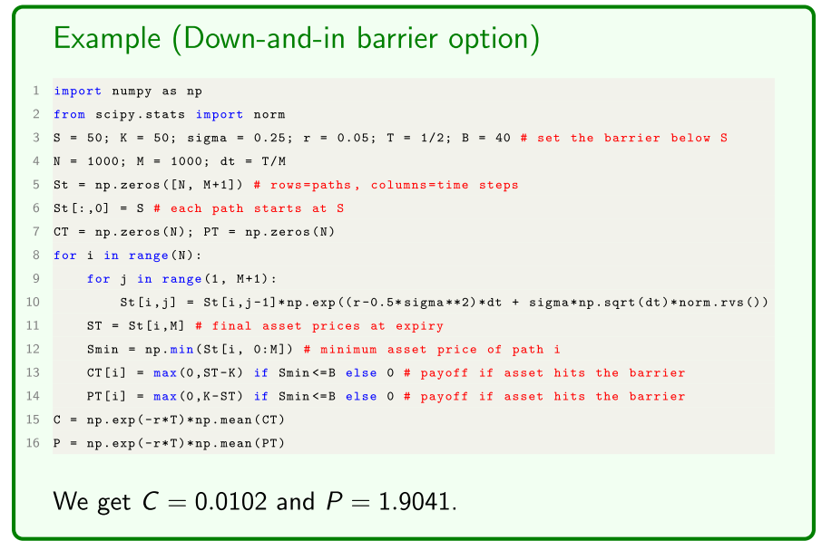
- Pricing formula is the same
Knock-out barrier options
European knock-out options are deactivated if the price of the underlying asset hits the barrier B at some point of the option’s life.
- The option then expires worthless.
If the barrier is never hit, the option stays alive and the payoff s are the
usual
- Up-and-out options set
, noting that typically . - Down-and-out options set
, noting that typically . The Monte Carlo pricing of knock-out options is a simple modification to the above for knock-in options, namely a reversal of the logical conditions on the payoffs if the barrier was hit.
- Same thing, in reverse
Example
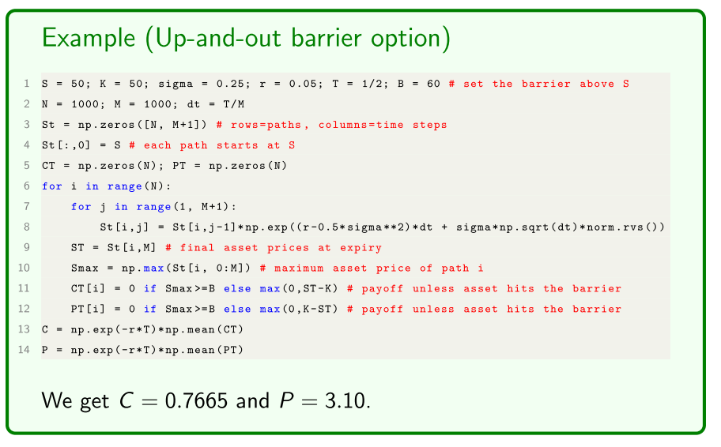
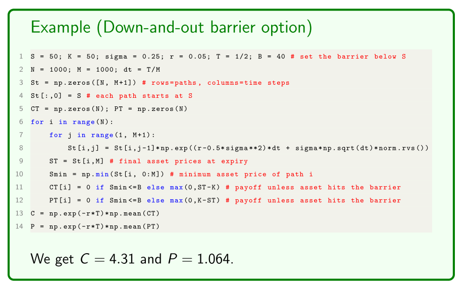
- Any asset price hitting the barrier has no payoff
- Some people might want an option position moving too far
- down-and-out option, from going too far
- control risks and exposure
- Another risk management tool with options
Asian Options
A European Asian or average option’s payoff s depend on the average
underlying asset price
- They’e called “Asian” options simply because they were first developed in the foreign exchange markets of Japan.
- There is various methods of calculating the historical averages used:
- Typically either continuous or discrete (say daily) averages.
- We assume continuous averages, which get more accurately approximated as our numerical method takes smaller step sizes.
There’s two general types of Asian options:
- Fixed-strike Asian options.
- Floating-strike Asian options.
- Only called asian because they were developed in japanese exchanges
- lookback used maximum or minimum options
- Look at the value the asset at discrete intervals, that is used to compare to strike
European fixed-strike Asian options are very similar to plain vanilla European options except the “fi nal price” of the underlying asset used in calculating an option’s payoff is not the asset price itself but the average asset price
- call payoff =
- put payoff =
It is simple to use Monte Carlo simulation to price them:
So, after calculating the N asset price paths
(arithmetic average). The payoffs for path
- call payoff =
- put payoff =
Fixed-strike Asian options
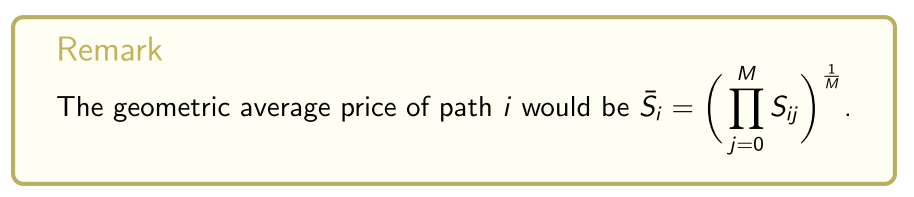
The Monte Carlo option prices are then simply

Example
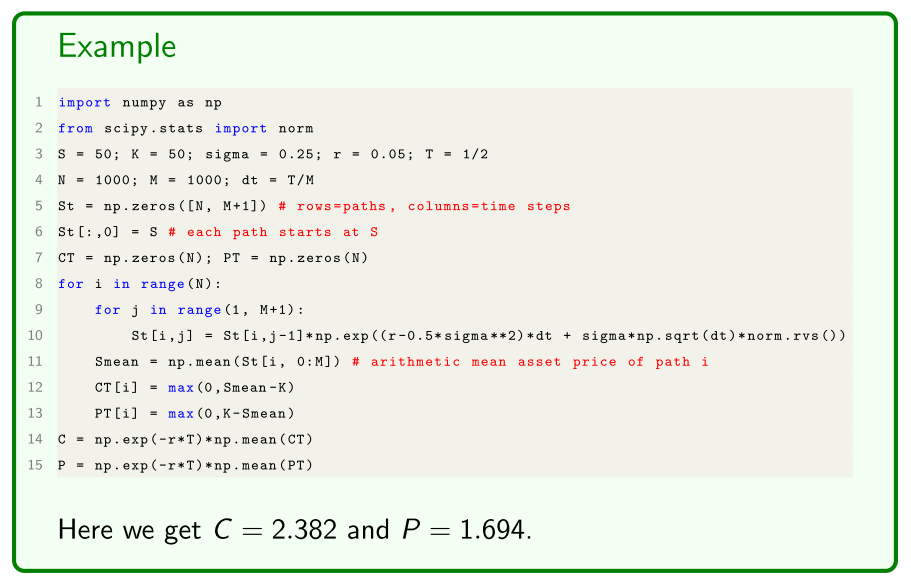
Average-strike Asian options
European average-strike Asian options diff er from fixed-strike Asian options by instead setting the strike price
- call payoff =
- put payoff =
The payoff s for path i are
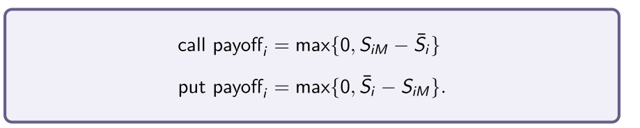
Example
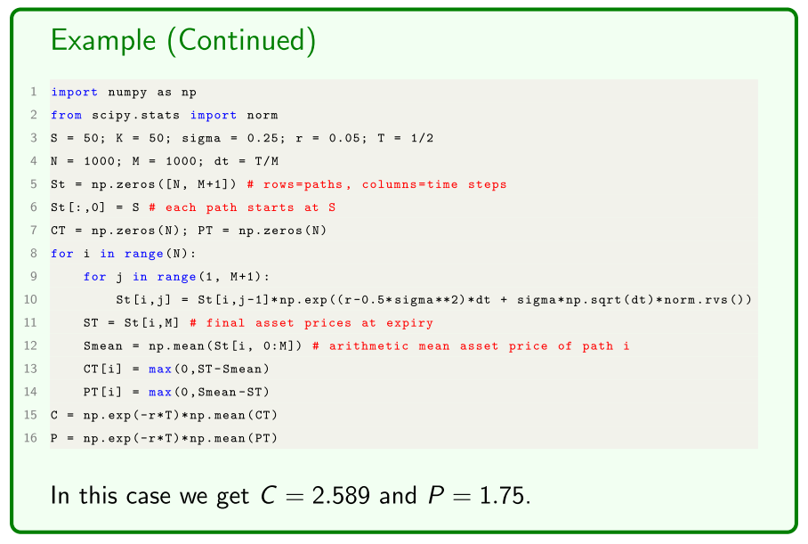